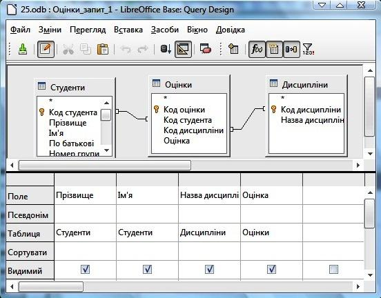

Теоретична частина
Запит — це формулювання користувачем своєї інформаційної потреби до деякої бази даних, найважливіший інструмент будь-якої системи управління базами даних (СУБД).
Запит (як категорія БД) — це спеціальний об’єкт, призначений для вибірки даних з таблиць бази, а також для виконання обчислень та інших операцій з базовими таблицями, включаючи їхнє перетворення. На відміну від реальної таблиці, цей набір записів реально не існує в базі даних. У результаті запиту утворюється таблиця. Її інформація є актуальною, тобто відображає останні зміни даних.
Відповідно до функцій виділяють такі типи запитів:
- Запит на вибірку – вибирає дані з однієї або декількох таблиць і подає їх підсумковою таблицею. У складних запитах на вибірку можлива наявність обчислюваних віртуальних полів. Запити на вибірку є основним видом запитів, на їх основі побудовано решту запитів. Вони можуть поділятися на:
- групові або підсумкові запити — підсумовують дані з однієї або декількох таблиць у формі електронної таблиці, слугують для аналізу даних і побудови діаграм і графіків, є незмінним, статичним набором даних.
- перехресний запит — це груповий запит, який відображає вибіркові дані в компактному і легкому для читання вигляді, у вигляді двовимірної матриці, так само як і зведені таблиці в табличному редакторі.
- Запити на зміну — вносять в таблиці значні зміни, відмінити які не можна. В LibreOffice Base такі запити часто заблоковані, тобто на виконання таких запитів необхідно мати специфічні права доступу. Запити такого типу поділяють підтипи:
- запит на видалення записів;
- запит на долучення записів;
- запит на створення таблиці;
- запит на оновлення значень полів.
Окремо можна виділити параметричні запити або запити з параметрами. Ці запити, при запуску пропонують ввести необхідний параметр (параметри) у відповідному діалоговому вікні (вікнах). Параметр може бути умовою для відбору записів. Таким чином, користувач замість багатьох запитів на вибірку з різними умовами використовує один запит з параметром, який залежно від величини параметра виводить різні дані. Наприклад, параметр може бути невідомою величиною для розрахунків. У цьому випадку результат розрахунків залежить від заданої величини параметра. Будь-який запит, що містить умови можна перетворити в запит з параметром.
Виконаний запит — це віртуальна таблиця, що відображає найсвіжіші дані, вибрані з базових таблиць згідно з умовами. Це тимчасовий об’єкт, утворений у пам’яті машини на момент виконання запиту. Запити оперують завжди зі свіжими даними, тому всі розрахунки здійснюють у запитах. Складні запити містять віртуальні поля, де йде опрацювання даних. На диску у базі даних при потребі зберігають інструкцію запиту як окремий об’єкт.
Оновлюваний запит — це динамічний набір даних. В оновлюваних запитах можна редагувати дані й долучати нові, всі зміни можна буде зберегти у базових таблицях, віртуальні поля буде перераховано. Ознака оновлюваного запиту — символ * (новий запис) в кінці таблиці. Зазвичай це запити на вибірку.
Неоновлюваний запит — це статичний набір даних, призначений лише для перегляду. Якщо змінити властивості запиту на вибірку, можна перетворити його на статичний набір даних.
Записати умови запиту можна по-різному. LibreOffice Base підтримує типи запитів QBE і SQL.
Запит QBE — запит за зразком, ангійською Query By Example. Його формують заповненням бланка запиту у вікні Конструктора запитів. Подають (графічним) бланком, який містить імена полів однієї або декількох таблиць у вигляді заголовків стовпців. У стовпцях можуть бути вирази. У рядках бланка указують ім’я таблиці, порядок сортування, вивід на екран, умови відбору. Бланк запиту нагадує бланк розширеного фільтру. На відміну від розширеного фільтру в запиті вказують конкретні поля для виводу в підсумковій таблиці. При заповненні бланка запит можна виконати («програти»), щоб переконатися у правильному відборі записів. Для цього використовують кнопку на панелі інструментів «Виконати». Готовий запит зберігають, вказавши ім’я. Як усталено буде «Запит1».
Запит SQL — послідовність вказівок мовою структурованих запитів, англійською Structured Query Language. Такі вказівки потрібно виконати зі вхідним набором даних для створення вихідного набору. У запит можуть входити вирази і статистичні функції. Запит до серверу чи запит на об’єднання можна створити лише мовою SQL.
Будь-який запит, незалежно від способу його створення, можна проглянути у вигляді SQL інструкції, використавши вказівку меню Зміни / Редагувати у режимі SQL.
Вкладений запит — запит, дані якого використовує інший запит. У цьому випадку спочатку буде опрацьовано вкладений запит, а потім — зовнішній (основний). При цьому всі властивості вкладеного запиту впливають на виконання. Наприклад, якщо вкладений запит був параметричним, з’явиться повідомлення для користувача щодо величин. Кількість вкладень не обмежена, але кожне вкладення сповільнює опрацювання.
Опис побудови запитів
Подальший опис здійснено на прикладі бази даних, яку буде надано для опрацювання у ході практичної роботи. Ця база даних вже містить чотири таблиці: Дисципліни, Оцінки, Студенти, Форма оплати, зв’язані між собою.
Розглянемо засоби створення запитів з детальним дослідженням інтерфейсу й інструментів. Ці знання допоможуть обирати найефективніший метод формування запиту. На вкладці Запити можна обрати один з трьох варіантів створення запиту в розділі Завдання:
- Створити запит у режимі дизайну;
- Використати Помічника для створення запиту;
- Створити запит у SQL-представленні.
Створення запитів з використанням Помічника
Переваги використання Помічника — простота, наочність. Недолік — неможливість вказати умову відбору. Створення запиту — послідовне виконання всіх вказівок Помічника. Базові таблиці або запити, з яких витягують дані одночасно, мають бути зв’язані між собою.
Створення запиту за допомогою Помічника виконують покроково:
Крок 1 — вибір з наявних таблиць (запитів) таких полів, які мають складати майбутню таблицю запиту.
Крок 2 — визначення порядку та типу впорядкування даних таблиці-результату.
Крок 3 — визначення умови відбору даних з вихідних таблиць.
Крок 4 дає можливість обрати степінь докладності подання інфомації таблицею-результатом: докладний запит (відображати всі записи запиту) чи підсумковий (відображати лише записи агрегатних функцій, де функції можна обрати у прихованому списку з відповідною назвою).
Кроки 5 і 6 визначають наявність та умову групування. Вони часто неактивні навіть при наявності записів в таблиці, які можна групувати.
Крок 7 дає можливість дати нові назви (псевдоніми) обраним полям.
Крок 8 — визначення назву запиту та можливість перегляду загальної інформації щодо властивостей таблиці запиту у полі Огляд.
Створення запиту в режимі дизайну
У діалоговому вікні Додати таблицю чи запит додати у вікно запиту ті таблиці або запити, на основі яких створюють запит.
Таблиці або запити повинні бути зв’язані між собою, інакше запит не буде виконано. Якщо зв’язки вказано за допомогою Схеми Даних, їх буде автоматично відображено в усіх запитах. Інакше зв’язки необхідно створити безпосередньо у вікні запиту за тим же принципом, що і на схемі даних. При виконанні запиту на основі таблиць з непрямими зв’язками необхідно додати в запит весь ланцюжок зв’язаних між собою таблиць у потрібній послідовності.
Вибрати поля для Запиту.
Це можна зробити кількома способами:
- вибрати із списку, що розкривається, ім’я таблиці а потім ім’я поля у відповідних рядках бланку запиту;
- двічі клацнути в табличці на назві поля;
- перетягнути на стовпець бланку назву одного поля чи кількох або символ * (всі поля). При цьому ім’я таблиці автоматично з’явиться на бланку.
Визначити виведення на екран полів запиту у відповідному рядку бланку. Іноді поле бере участь у запиті, але його не відображають на екрані. Наприклад, якщо воно існує лише для коректного запису умови. Видимі поля позначають прапорцями, а невидимі поля залишаються без прапорців.
Вказати впорядкування за потрібними полями, вибравши із списку, що розкривається, варіанти: за збільшенням, за зменшенням, відсутній. Як усталено упорядкування не здійснюють.
Замовити умови відбору в одному рядку або в кількох рядках. Якщо умови вказано в одному рядку, то їх сполучено логічною операцією «І»
якщо в різних рядках — логічною операцією «АБО».
Проглянути результат роботи: виконати запит, використовуючи кнопку Виконати запит або натиснувши функціональну клавішу F5.
Відредагувати запит у режимі роботи з бланком у Конструкторі або в режимі SQL. Можна змінити таке:
- послідовність стовпців (виділенням і перетягуванням);
- ширину стовпців (перетягуванням за заголовок);
- властивості поля запиту (підпис, заголовок, формат, маску) через контекстне меню стовпця. Змінити назву-підпис поля не вдасться, якщо поле вже має підпис — властивість, вказану у базовій таблиці.
Зберегти запит як об’єкт, давши йому ім’я (як усталено Запит1).
Створення запиту в SQL-поданні
Створення запиту у SQL-поданні передбачає знання мови SQL і специфічного синтаксису формування запитів. Для створення запитів у текстовому форматі в LibreOffice Base існує SQL-подання, яке буде подано чистим аркушем, якщо запит ще не створено, або аркушем з SQL-кодом, якщо запит відкрито для редагування у SQL-поданні.
Після визначення інструменту створення запитів можна приступати до знайомства з процесом створення різних типів запитів. Створення запитів за допомогою режиму дизайну дає більше можливостей для варіацій з умовами й функціями та не вимагає набуття знань щодо SQL, тому надалі приклади подано саме для цього режиму.
Запит на вибірку без умови (ще називають простий запит) дає можливість витягнути з таблиці / іншого запиту (з кількох зв’язаних між собою таблиць / запитів) дані вказаних користувачем полів за всіма записами в них. Для цього потрібно лише визначити видимими ті поля з таблиць, які цікавлять користувача.
Наприклад, для визначення оцінок кожного студента з кожного предмета необхідно виділити такі поля: Прізвище, Ім’я, Назва_дисципліни, Оцінка, які розташовано у трьох різних таблицях.

Результатом цього запиту буде така таблиця:
Запит на вибірку з умовою дає можливість витягнути з таблиці / іншого запиту (з кількох зв’язаних між собою таблиць / запитів) дані вказаних користувачем полів за всіма записами, які задовольняють попередньо заданій умові. Для цього потрібно визначити видимими ті поля з таблиць, які цікавлять користувача, та в рядку Критерій ввести умову.
Для визначення студентів, у яких оцінки з визначених у базі даних предметів не менші за 4, необхідно:
- виділити поля: Прізвище, Ім’я, Назва_дисципліни, Оцінка, які розташовано у трьох різних таблицях;
- записати в рядку Критерій поля Оцінка: >=4.
Результатом цього запиту буде така таблиця:
Для визначення студентів, у яких оцінки з математики не перевищують 4, необхідно:
- виділити поля: Прізвище, Ім’я, Назва_дисципліни, Оцінка, розташовані у трьох різних таблицях;
- записати в рядку Критерій поля Оцінка: <=4;
- записати в рядку Критерій поля Назва дисципліни: Математика (звертайте увагу на регістр і розмір літер в текстовому записі).
Результатом цього запиту буде така таблиця:
Таким самим чином можна сформувати умови із знаками: =, <, >, >=, <= та використанням логічних функцій OR (або), AND (і), NOT (заперечення).
Наприклад, для визначення студентів, ім’я яких починається на літеру О, необхідно:
- виділити поля: Прізвище, Ім’я;
- записати в рядку Критерій поля Ім’я: LIKE’O'.
Результатом цього запиту буде така таблиця:
Запит з параметром можна отримати перетворенням будь-якого запиту. При цьому в рядку Критерій замість конкретної умови вводять повідомлення про введення параметра: одним словом або кількома словами через символ підкреслення. Повідомлення вводять після двокрапки. Воно вкаже у майбутньому користувачеві на тип інформації, яку потрібно буде ввести у діалоговому вікні бази даних.
Під час запуску запиту з параметром на екрані буде повідомлення про введення параметра Ввід параметру, де у полі Параметри відображено текст, записаний раніше в рядку Критерій, а в розділі Значення користувач має ввести відповідну величину за даним критерієм.
Замість кількох запитів для різних груп студентів доцільно створити один запит з параметром — номером групи. Якщо необхідно створити пошук за конкретною дисципліною з виведенням списку оцінок, то Критерій виглядатиме так:
- Введіть_номер_групи;
- Дисципліна.
Результатом такого запиту буде таблиця:
Запит з обчислюваними полями отримують таким чином. Для обчислюваних віртуальних полів у стовпець замість імені поля вводять дію, яку треба виконати з відповідними полями. Причому назви полів вводять у лапках, а дію – математичним символом без пробілів. Назву обчислюваного поля вводять у рядку Псевдонім. Наприклад, для обчислення стипендії, яку отримають студенти з урахуванням пільгових надбавок, використовують таку форму запису:
“Розмір_стипендії”+“Розмір_пільг”.
Результатом описаного запиту буде така таблиця:
Після виконання описаних вище вказівок по створенню запитів база даних буде містити 7 запитів, виконання яких буде відображатися в розділі Документ вікна бази даних. На поданому нижче малюнку у цьому розділі відображено відповідь на запит, який виділено у переліку запитів.
Закріплення вивченого матеріалу
- Відкрити базу даних
- Користуючись Помічником, створити запит Оцінки_cтудентів. Видимі поля: Прізвище, Ім’я, Дисципліна, Оцінка.
- Користуючись Помічником створити запит на вибірку лише тих студентів, які навчаються у 151 групі. Видимі поля: Прізвище, Ім’я, Група. Назвіть таблицю результату Група_151.
- Користуючись Помічником, створити запит Вибірка_за_абеткою на вибірку лише тих студентів, прізвище яких починається на літеру «К». Видимі поля: Прізвище, Ім’я, Група, Стипендія .Впорядкуйте таблицю за зростанням за полем Прізвище.
- У режимі дизайну створіть запит Трієчники на вибірку усіх студентів, які мають оцінку «3» з математики. Вилимі поля: Прізвище, Ім’я, Група, Дисципліна.
- У режимі дизайну створіть запит Група з параметром за полем Група. Видимі поля: Прізвище, Ім’я, Група, Стипендія.
- У режимі дизайну створіть запит Перерахунок_стипендії на створення таблиці з обчислюваними полями. Видимі поля: Прізвище, Ім’я, Група, Стипендія, Перерахована_стипендія (розрахункове поле). В полі Перерахована_стипендія записати вираз, що відповідає збільшеній на 25% стипендії.
Контрольні запитання
- Що таке запит?
- Яке призначення запитів?
- Які типи запитів?
- У чому відмінності запиту й фільтра?
- Який алгоритм створення запиту у режимі дизайну?
- Який алгоритм створення запиту за допомогою Помічника?
- Що такеє запит QBE?
- Яка роль грають зв’язків між таблицями при побудові запитів?
- Які особливості побудови запитів з розрахунковими полями?
- Що таке параметричні запити? Які вони мають особливості?
Завдання
Повторити тему «Створення бази даних з різними типами запитів». На основі отриманих на уроці знань і вмінь створити порівняльну таблицю щодо створення запитів за допомогою Помічника й у режимі дизайну такого вигляду.
| Критерії | Помічник | Режим дизайну |
|---|---|---|
| Послідовність | ||
| Зручність | ||
| Наочність | ||
| Результативність |